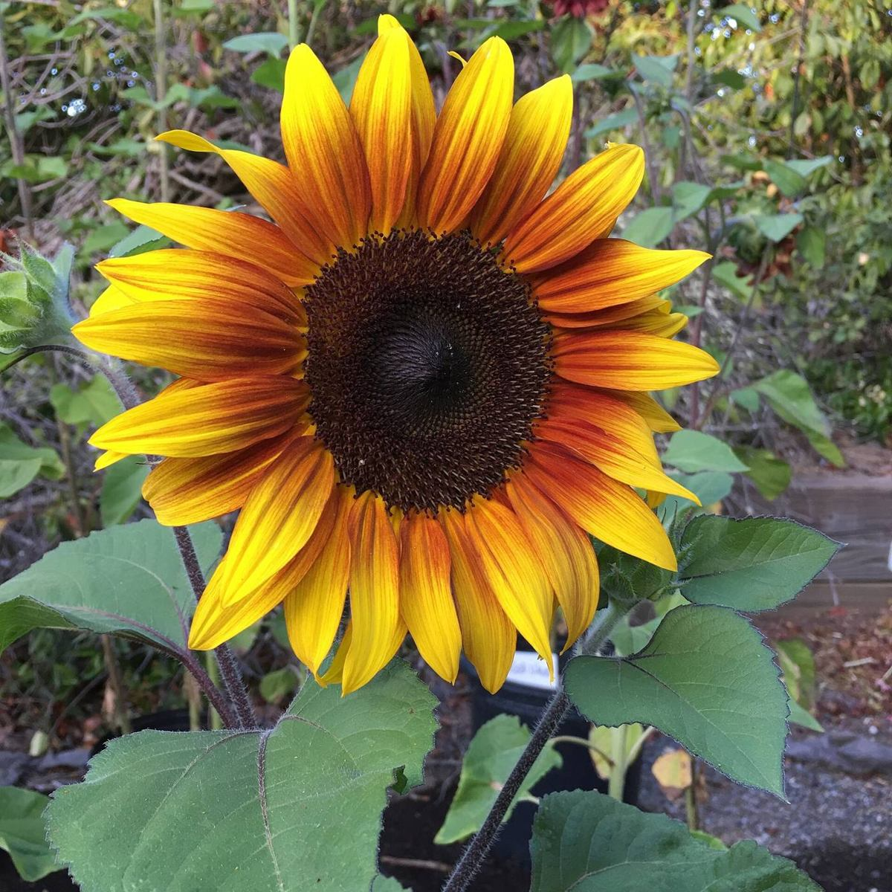
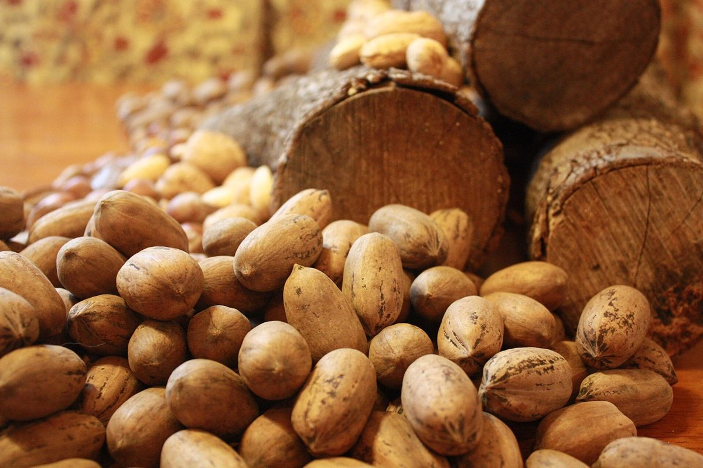
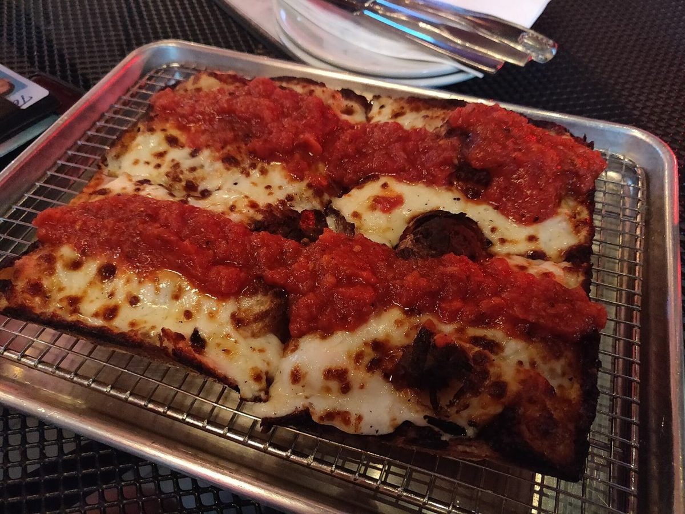

制作側の連想
高枝切りばさみを、配置図にしてみる
このサイトは、長い柄の先に刃をつけた高枝切りばさみを縦長に描き、六つの部位に番号をふって並べた図を飾りにして作りました。制作側の連想で、お店の理念・由来とは無関係です。実際の製品の仕様を示すものでもありません。
凡例
六つの部位
- 1刃先先端に開いている、枝をはさむための二枚の刃。
- 2ワイヤー手元の引き手から先端へ、ポールに沿って通る細い引きひも。
- 3伸縮パイプ長さを変えられる、継ぎ足し式のまっすぐな軸。
- 4固定ノブパイプのつなぎ目で、伸ばした長さをとめるための輪とつまみ。
- 5グリップ手で支える、ポールの根もと側の握り。
- 6引き手グリップの横にある、ワイヤーを引いて刃を動かすレバー。



ギャラリー(イメージ)
いろいろな写真を並べて


写真は食材・食器・風景などのイメージです。お店のものではなく、お店で提供している商品を示すものでもありません。
ご案内
お店のこと(確認できたものだけ)
| 所在地 | 〒379-2313 群馬県みどり市笠懸町鹿２４５０−２６ |
|---|---|
| 電話 | 準備中 |
| 営業時間 | 準備中 |
| 定休日 | 準備中 |
| ご予約 | 準備中 |
| 駐車場 | 準備中 |
| SNS | Instagram @yagipan2014 |